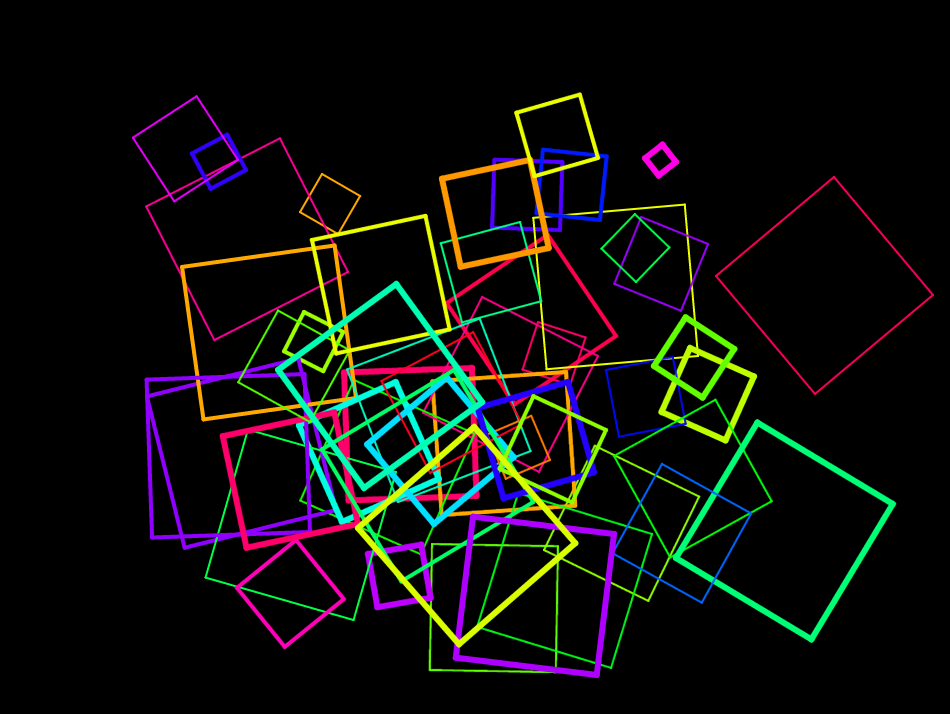

Beweging verkennen
Dit zijn werken van de kunstenaars Josef Albers, Maya Hayuk, Wassily Kandinsky, Atta Kwami, Kazimir Malevich, Carlos Merida, Piet Mondriaan, Alma Thomas, en Theo van Doesburg. De uitgangspunten en stijlen verschillen, maar allemaal zijn ze gebaseerd op veelhoeken en cirkels.


In deze les ga je veelhoeken creëren om je eigen 'kunst' te maken:

Op deze pagina zet je de eerste stappen met het tekenen van een vorm in
Snap!.
Je gebruikt het repeat-blok om dezelfde code meerdere malen uit te
voeren.
Een algoritme is een opeenvolging van stappen die gewoonlijk door een computer worden uitgevoerd. In sommige programmeertalen, zoals Snap!, programmeer je een algoritme door blokken (individuele opdrachten) te slepen en aan elkaar vast te maken. In andere talen typ je de instructies. Het idee is hetzelfde.
- Voorspel wat dit algoritme de sprite zal laten doen:
- Log in op Snap!
Een klik met de muis op een script voert het uit. Merk op dat script-blokken tijdens het uitvoeren oplichten in het invoervak.
- Pak blokken uit het `Herhaal`, `Besturen` en `Beweeg` menu, en bouw het script op.
- Klik op je script en kijk wat de sprite doet. Klopt je voorspelling?
- Bewaar nu eerst je werk als nieuw project: H1L3-Veelhoeken.
Klik tussendoor op 'Bewaar' om toevoegingen of veranderingen op te slaan. - Klik op in het Penpalet en klik daarna op je script om het nogmaals uit te voeren.
-
 Analyseer hoe het script doet wat het doet.
Analyseer hoe het script doet wat het doet. - Vergelijk jouw script met het script van een ander duo in je omgeving. Als het script zich anders gedraagt controleer dan beide scripts.
Wissel wie er achter het toetsenbord zit.
- Experimenteer:
-
Verander 100 naar 50 in het
neem stappenblok van jouw script. - Klik nogmaals op het script om het met de nieuwe waarden uit te voeren.
- Klik op het blok in het groene Penpalet.
- Verander het getal in het blok en voer het script nog een paar keer uit.
- Verander het getal in het blok.
- Experimenteer met de getallen in de
draai ... gradenenherhaal ... keerblokken. Probeer zo een driehoek te tekenen. - Gebruik om de pendikte naar iets als 4, 10 of 50 te zetten. Teken daarna iets.
Je kunt klikken op (of elk ander blok) in het palet of het scriptgebied om het uit te voeren. Als je op een blok in een script klikt, wordt het hele script uitgevoerd.Het blok kan je sprite terughalen wanneer deze van het scherm af beweegt.Om de pendikte te wijzingen klik op hetmaak pengrootteblok om het uit te voeren nadat je het gewenste getal hebt ingevoerd. -
Verander 100 naar 50 in het
- Experimenteer, wat laat een spoor achter?
- Beweeg de sprite door deze te slepen naar een nieuwe locatie. Laat dit een spoor achter terwijl je sleept?
- Beweeg de sprite door op te klikken. Laat dit een spoor achter wanneer deze beweegt?
- Klik op . Laat het een spoor achter?
Gebruikpen_neerenpen_omhooguit het groene pen-palet om de pen wel of geen spoor te laten tekenen.